Le média
Conseils pratiques, réglementation et études de cas : des réponses concrètes aux questions des MJPM et des aidants professionnels sur le logement des Majeurs Protégés.
81 articles

Comment gérer l'assurance habitation de votre bénéficiaire en cas de déménagement ?
Vous avez un bénéficiaire qui déménage ? Vous voulez savoir comment gérer son assurance habitation ? Dans cet article, nous vous expliquons tout !
Lire l'article →
Comment vérifier qu’une assurance habitation est en règle ?
Vous êtes MJPM ? Dans cet article, vous allez découvrir comment vérifier qu'une assurance habitation est en règle.
Lire l'article →
Quelles assurances souscrire en tant que propriétaire ?
Vous avez des bénéficiaires qui sont propriétaires ? Vous voulez savoir comment protéger leurs biens ? Dans cet article, vous allez découvrir quelles assurances souscrire en tant que propriétaire.
Lire l'article →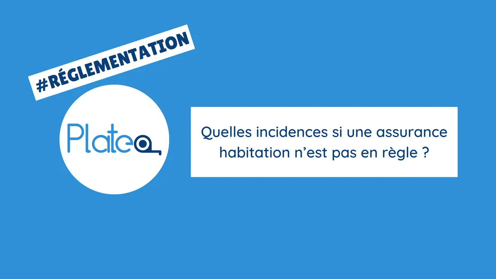
Quelles incidences si une assurance habitation n’est pas en règle ?
Dans cet article, nous allons vous expliquer qu'est-ce qui peut se passer si une assurance habitation n'est pas en règle.
Lire l'article →Assurance habitation : recours en cas de litiges avec l'assureur
Dans cet article, nous clarifions vos options en cas de désaccord avec l'assureur habitation de votre bénéficiaire.
Lire l'article → RéglementationDétecteur de fumée : des sanctions de l’assureur en cas d'absence ?
Vous vous demandez si votre bénéficiaire peut être sanctionné en cas d'absence de détecteur de fumée ? Nous vous expliquons tout dans cet article !
Lire l'article →
Où se trouvent les punaises de lit dans un logement ?
Vous souhaitez savoir où se trouvent les punaises de lit dans un logement ou comment les reconnaître ? Découvrez les endroits préférés des punaises de lit dans cet article !
Lire l'article →
L’état des lieux d’entrée/ sortie de logement
Obtenez des informations détaillées sur l'importance ainsi que les éléments vérifiés lors de cet état des lieux dans cet article !
Lire l'article →
Un vitrage cassé est-il couvert par l’assurance habitation ?
Un vitrage cassé dans le logement d'un bénéficiaire ? Vous ne savez pas si l'assurance habitation prend en charge les dommages ? Cet article vous explique tout !
Lire l'article →
Comment éliminer des cafards dans le logement d'un majeur protégé ?
Un problème de cafards dans le logement d'un bénéficiaire ? Découvrez dans cet article quelles mesures prendre pour les éliminer efficacement !
Lire l'article →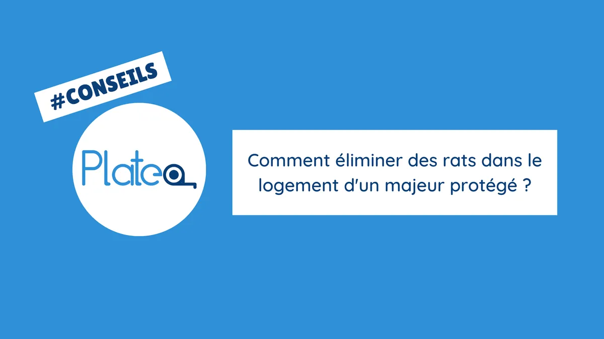
Comment éliminer des rats dans le logement d'un majeur protégé ?
Des rats présents dans le logement d'un de vos majeurs protégés ? Découvrez dans cet article comment les éliminer !
Lire l'article →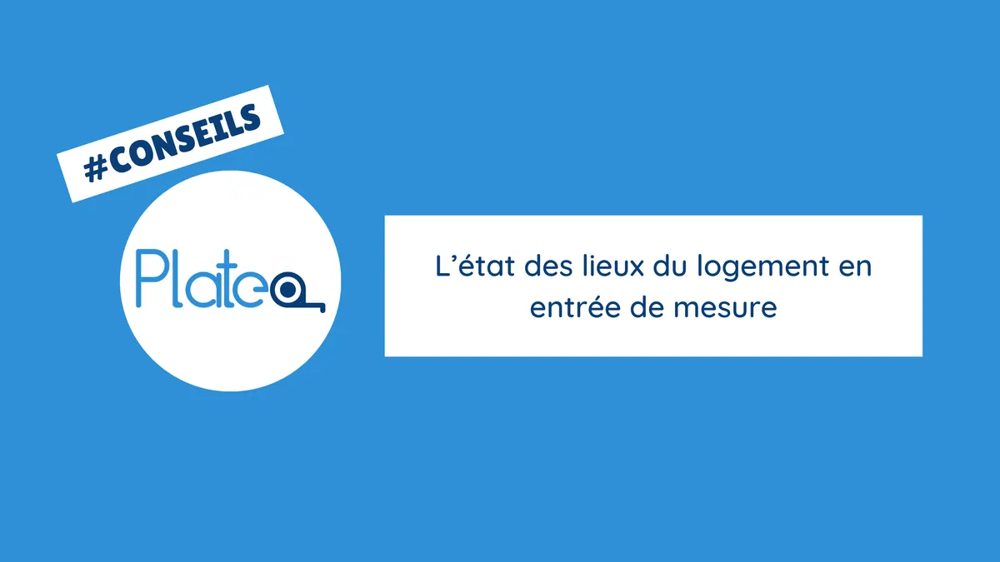
L’état des lieux du logement en entrée de mesure
Cet article contient toutes les informations nécessaires concernant la réalisation des états des lieux du logement en entrée de mesure.
Lire l'article →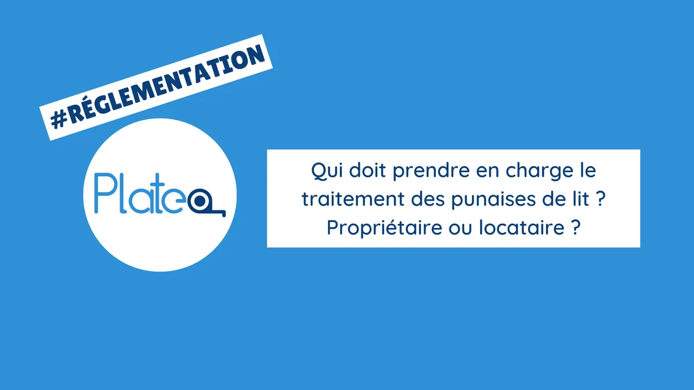
Qui doit prendre en charge le traitement des punaises de lit ? Propriétaire ou locataire ?
Si vous avez des doutes sur la responsabilité du traitement des punaises de lit, cet article vous expliquera tout en détail !
Lire l'article → RéglementationA quelle hauteur fixer une barre de maintien ?
Vous êtes MJPM ? Découvrez à quelle hauteur fixer une barre de maintien pour aider vos bénéficiaires en perte d'autonomie à se déplacer en toute sécurité.
Lire l'article →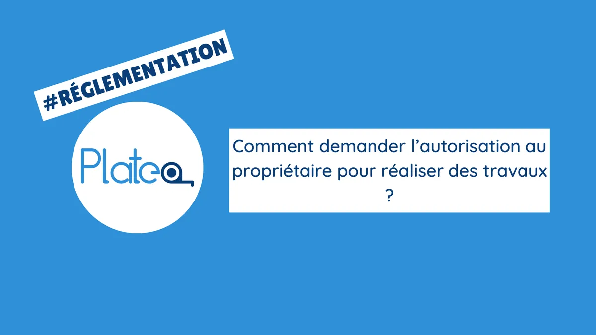
Comment demander l’autorisation au propriétaire pour réaliser des travaux ?
En tant que MJPM, obtenir l'autorisation du propriétaire pour réaliser des travaux chez un majeur protégé peut être compliqué. Cet article présente la démarche à réaliser !
Lire l'article → ConseilsComment gérer un dépannage urgent ?
Cet article donne des conseils pratiques pour aider les MJPM à gérer une situation de dépannage d'urgence, en toute sérénité.
Lire l'article → ConseilsComment sécuriser une plaque de cuisson au gaz ?
La sécurité en cuisine est cruciale pour un majeur protégé. Découvrez des astuces et les dispositifs à utiliser en tant que MJPM pour éviter les accidents domestiques.
Lire l'article → ConseilsComment vérifier l’attestation d’assurance d’un artisan ?
Vous êtes MJPM ? Vous voulez protéger vos bénéficiaires des risques liés aux travaux. Ce guide pratique explique comment vérifier l'assurance d’un artisan.
Lire l'article → RéglementationDans quels cas la certification Qualigaz est-elle obligatoire ?
Vous êtes MJPM ? Avez-vous déjà entendu parler de la certification Qualigaz ? Découvrez dans cet article les différents cas où la certification Qualigaz est obligatoire.
Lire l'article → RéglementationEst-ce qu’un contrat d'entretien est obligatoire pour une chaudière à gaz ?
Vous êtes MJPM et vous avez des bénéficiaires qui possèdent des chaudières à gaz ? Découvrez si un contrat d'entretien est obligatoire dans cet article !
Lire l'article → Étude de casL'aménagement d'une douche PMR au rez-de-chaussée est-elle la seule option pour maintenir l'autonomie ?
Un majeur protégé souhaite installer une douche au RDC de sa maison. Avec le MJPM et un ergothérapeute, une solution alternative a été trouvée pour maintenir l’autonomie du bénéficiaire.
Lire l'article → ConseilsLa collaboration entre ergothérapeutes et artisans : un partenariat clé dans l'adaptation des logements
Dans cet article, vous allez voir en quoi la collaboration entre ergothérapeutes et artisans est un étape clé dans l'adaptation des logements de vos majeurs protégés.
Lire l'article →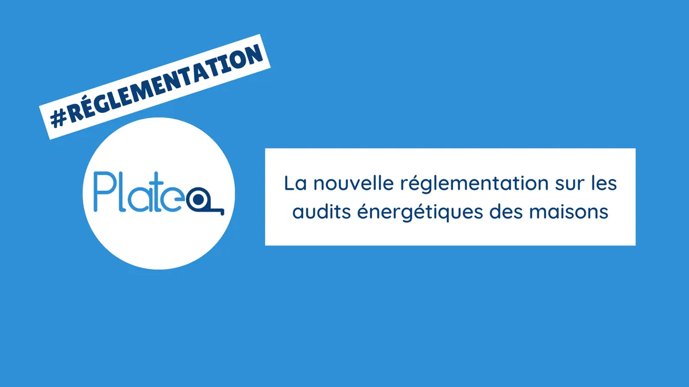
La nouvelle réglementation sur les audits énergétiques des maisons
Vous êtes MJPM ? Êtes-vous au courant de la réglementation en matière d'audit énergétique ? Découvrez dans cet article, nos conseils pratiques pour être en conformité.
Lire l'article → RéglementationL’arrêté de catastrophe naturelle sécheresse pour les Bouches-du-Rhône - Mai 2023
Suite à la publication de l’arrêté de catastrophe naturelle sécheresse en Mai 2023, retrouvez nos conseils et la procédure à suivre pour déclarer le sinistre à l’assurance.
Lire l'article → RéglementationPermis de construire ou déclaration préalable ?
Vous prévoyez des travaux de construction ou de rénovation ? Cet article présente aux MJPM les éléments à considérer pour faire un choix entre le permis de construire et la déclaration préalable.
Lire l'article →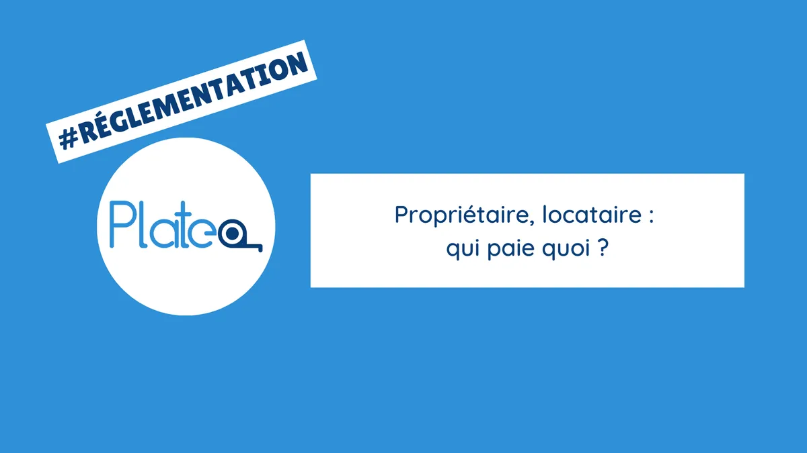
Propriétaire, locataire : qui paie quoi ?
Lorsqu’un Majeur Protégé rencontre un problème dans son logement, il est souvent compliqué pour le MJPM de savoir si les travaux sont à la charge du propriétaire ou du locataire.
Lire l'article → ConseilsQuand appeler les pompiers pour une fuite d’eau ?
Vous êtes MJPM ? Découvrez dans cet article pourquoi il est crucial de contacter les pompiers pour limiter les dommages en cas de fuite d'eau importante.
Lire l'article → Étude de casQue faire en cas de consommation d’eau excessive ?
En cas de consommation d'eau excessive, découvrez dans cet article quels gestes un MJPM pourrait adopter pour réduire la facture et préserver les ressources en eau de son bénéficiaire.
Lire l'article → Étude de casQue faire en cas de travaux en fin de bail estimés par l’agence immobilière ?
Suite au départ de son logement, un majeur protégé a reçu un devis de remise en état de la part de l’agence immobilière. Le MJPM se demande donc si les travaux sont nécessaires et aux bons prix.
Lire l'article →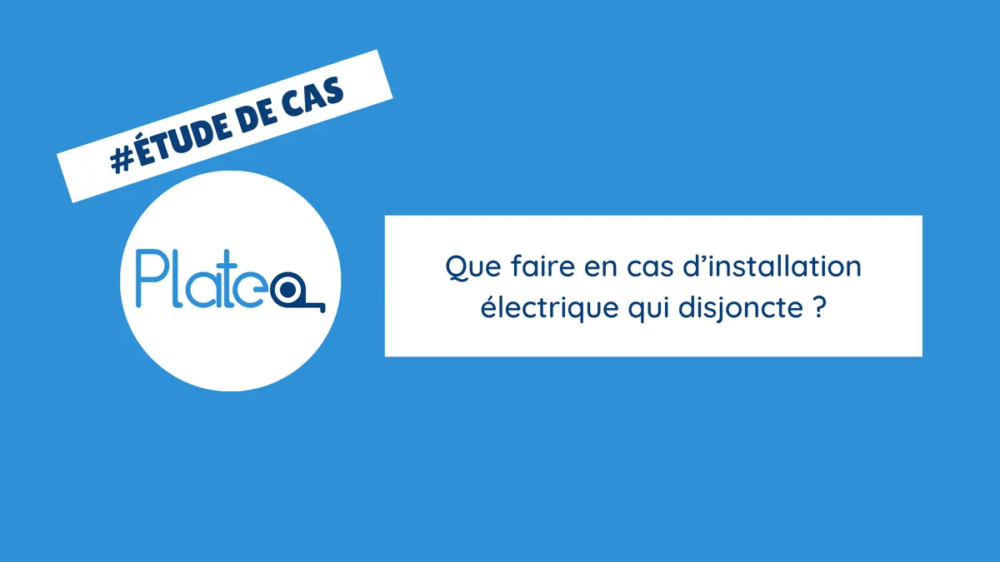
Que faire en cas d’installation électrique qui disjoncte ?
Vous êtes MJPM et un majeur protégé rencontre un problème électrique ? Découvrez les mesures de sécurité et les étapes à suivre pour résoudre le problème dans cet article.
Lire l'article →
Que faire lorsqu’un volet roulant est en panne ?
Un volet roulant en panne et ne savez pas quoi faire ? Découvrez dans cet article les différentes causes de panne et les solutions que les MJPM pourront utiliser pour y remédier.
Lire l'article →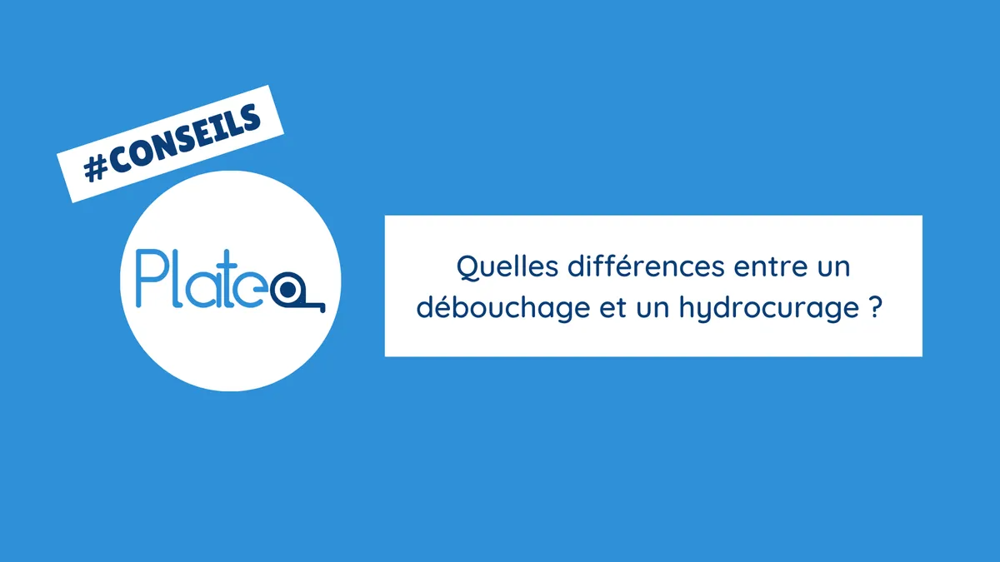
Quelles différences entre un débouchage et un hydrocurage ?
Vous êtes MJPM ? Un bénéficiaire est confronté à un problème de canalisation bouchée ? Découvrez les différences entre un débouchage et un hydrocurage.
Lire l'article → RéglementationQuelles obligations pour l’entretien du jardin d’un majeur protégé ?
L'entretien du jardin d'un majeur protégé est une préoccupation pour le MJPM. Informez-vous sur vos obligations grâce à cet article et agissez en toute conformité.
Lire l'article →
Quels diagnostics pour mettre en location le logement d’un majeur protégé ?
En tant que MJPM, vous souhaitez mettre en location un bien immobilier d'un majeur protégé ? Découvrez dans cet article quels diagnostics sont nécessaires.
Lire l'article → ConseilsQuels horaires pour des travaux chez un majeur protégé ?
Besoin de programmer des interventions chez un majeur protégé en tant que MJPM ? Découvrez comment éviter les dérangements pour le MP.
Lire l'article → ConseilsQuels protocoles pour éliminer les punaises de lit ?
Êtes-vous MJPM ? Découvrez dans cet article quels protocoles suivre pour éliminer les punaises de lit !
Lire l'article →
Quels travaux réaliser pour sortir un logement de la classe G ?
En tant que MJPM, un de vos majeurs protégés est propriétaire d’un logement en classe G ? Cet article explique la procédure et les travaux nécessaires pour en sortir.
Lire l'article → RéglementationQu’est-ce qu’une RC Pro ?
Vous êtes MJPM ? Découvrez dans cet article la RC Pro : quand elle s'applique, son impact sur vos majeurs protégés et comment vous protéger.
Lire l'article → ConseilsQu’est-ce qu’une recherche de fuite?
Lorsqu’un logement d’un majeur protégé présente une fuite d’eau, il est parfois nécessaire que le MJPM demande une “recherche de fuite”.
Lire l'article → RéglementationTravaux avec TVA de 10% : comment être en conformité ?
Certains travaux engagés par les MJPM peuvent bénéficier d'une TVA à 10%. Voici la réglementation pour rester en conformité avec les règles fiscales.
Lire l'article → ConseilsUn majeur protégé a perdu ses clés, que faire ?
Un majeur protégé a perdu ses clés ? Protégez ses biens et ses intérêts en suivant les bonnes démarches. Trouvez des conseils pour les MJPM dans cet article !
Lire l'article →
Comment déboucher les canalisations bouchées ?
Des canalisations bouchées ? Découvrez les facteurs responsables et les solutions pour les déboucher dans cet article !
Lire l'article → ConseilsLes solutions d'adaptation des logements recommandées par les ergothérapeutes
En recherche de solutions d'adaptation de logement pour un bénéficiaires ? Découvrez les solutions les plus recommandées !
Lire l'article → ConseilsQuels critères sont pris en compte par les ergothérapeutes ?
Vous êtes MJPM ? Découvrez quels critères sont prises en compte par les ergothérapeutes !
Lire l'article → ConseilsQuand faire réaliser un passage caméra ?
Lorsqu’une canalisation d’un majeur protégé est bouchée, il peut être important pour le MJPM de faire réaliser un passage caméra. Découvrez dans cet article les situations où cette investigation est recommandée.
Lire l'article → ConseilsComment éviter que les canalisations se bouchent ?
Vous êtes MJPM ? Découvrez comment éviter que les canalisations de vos MP se bouchent dans cet article !
Lire l'article → ConseilsEst-ce qu’un appareil électroménager est réparable ?
Vous êtes MJPM ? Vous vous demandez si l'appareil électroménager de votre bénéficiaire est réparable ? Découvrez les vérifications et les éléments à prendre en compte dans cet article !
Lire l'article → ConseilsComment gérer un dégât des eaux dans le logement d’un majeur protégé ?
En votre qualité de MJPM, vous gérez un dégât des eaux chez un MP ? Découvrez dans cet article, quelles étapes et dans quel ordre agir pour gérer au mieux cette situation.
Lire l'article → Étude de casEst-il toujours possible de construire une douche sans marche ?
Vous envisagez de construire une douche sans marche pour un de vos bénéficiaires ? Cet article donne aux MJPM des conseils pratiques.
Lire l'article → RéglementationPeut-on louer un logement en classe G ?
Vous êtes MJPM ? Vous avez des bénéficiaires propriétaires de logements en classe G ? Une nouvelle réglementation interdit la location de ces logements. Découvrez tout dans cet article !
Lire l'article →
Que faire en cas d’humidité dans le logement d’un bénéficiaire ?
Vous êtes MJPM ? Le logement d'un bénéficiaire présente des problèmes d'humidité ? Cet article vous explique les étapes à suivre pour traiter efficacement l’humidité.
Lire l'article → ConseilsQue faire si un majeur protégé ne veut pas laisser entrer l’artisan ?
Un majeur protégé refuse de laisser entrer un artisan ? Nous proposons des solutions pour les MJPM, pour mieux gérer les interventions des artisans !
Lire l'article →
Quel est le label obligatoire pour bénéficier des aides financières pour les travaux de rénovation énergétique ?
Vous êtes MJPM ? Vous avez des bénéficiaires propriétaires de logements en classe G ? Une nouvelle réglementation interdit la location de ces logements. Découvrez tout dans cet article !
Lire l'article → ConseilsQuel est le rôle d’un ergothérapeute ?
Les ergothérapeutes peuvent aider les MJPM et leurs majeurs protégés à adapter les logements des bénéficiaires en perte d'autonomie.
Lire l'article → RéglementationQuelles garanties sont obligatoires pour un professionnel du bâtiment ?
Des défauts ou malfaçons après des travaux chez vos majeurs protégés ? Découvrez les garanties à connaître pour les MJPM et aidants professionnels.
Lire l'article → RéglementationQuels détecteurs sont obligatoires dans un logement ?
Pour les logements des majeurs protégés, certains détecteurs sont obligatoires. Nous informons les MJPM de leur utilité et comment les installer.
Lire l'article → RéglementationQuels sont les différents taux de TVA pour les travaux chez vos bénéficiaires?
En tant que MJPM, découvrez les taux de TVA applicables aux travaux chez vos bénéficiaires. Cet article vous permettra de mieux comprendre le système de TVA en vigueur.
Lire l'article →
Comment confier ses travaux à des artisans de confiance? Avec quelles garanties ?
Dans cet article vous pourrez observer le cheminement de A à Z lorsque vous devez réaliser des travaux chez une personne sous mesure de protection : de la localisation du besoin en travaux jusqu’à trouver l’artisan adapté.** **De plus, nous vous expliquerons à quelles garanties et assurances sont soumis les artisans français.**
Lire l'article →
Comment traiter un dégât des eaux ou un problème d'humidité ?
Il est extrêmement courant de nos jours de faire face à un problème concernant de l’eau dans son domicile. Que ce soit dans les canalisations, les équipements de la maison ou encore en toiture, ces dégâts peuvent être compliqués à traiter correctement. Voici quelques conseils sur les attitudes à adopter dans ce cas là.
Lire l'article →
4 astuces pour valoriser son bien et mieux le vendre
Des idées incontournables pour mieux vendre son bien
Lire l'article →
Comment calculer le point de rosée ?
Dans cet article, nous évoquerons la condensation qui peut se créer dans une paroi isolée à travers la notion de point de rosée !
Lire l'article →
Comment changer un fusible d'un tableau électrique ?
Mode opératoire pour une intervention en sécurité
Lire l'article →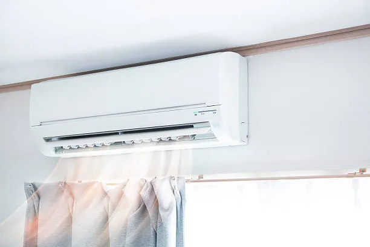
Comment entretenir sa climatisation ?
Des conseils pour un entretien régulier
Lire l'article → AutreComment éviter les bruits dans les canalisations ?
Identifier les causes et retrouver la tranquillité !
Lire l'article → AutreDes travaux pour adapter les logements
Les aides financières aux travaux pour les séniors
Lire l'article →
Déboucher ses canalisations avec des produits écologiques
Des alternatives aux produits chimiques
Lire l'article → AutreGagnez du temps avec Astrallys : zoom sur notre partenaire
Plateo s'allie avec Astrallys pour proposer une solution globale pour tous types de travaux
Lire l'article → AutreLe contrôle d'accès pour la sécurité de votre entreprise
Comment sécuriser votre établissement ?
Lire l'article →
Les aides financières pour les propriétaires bailleurs
Différents dispositifs pour un logement mis en location
Lire l'article → AutreMaPrimeRénov’ : quelles évolutions pour 2021 ?
De nouvelles conditions d'éligibilité
Lire l'article → AutreMur porteur en copropriété : quelles obligations ?
Les murs porteurs sont des parties communes...
Lire l'article →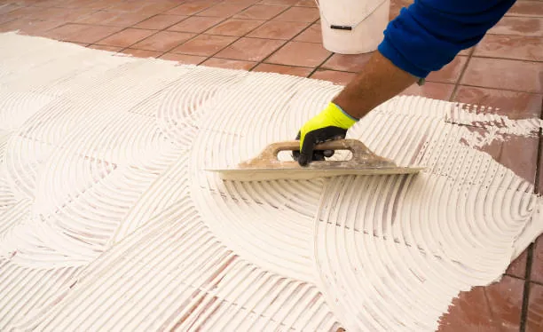
Pensez à conserver des carreaux !
Une astuce simple pour anticiper vos futurs travaux
Lire l'article → AutrePourquoi rénover son appartement avant de le mettre à la location ?
5 raisons de le faire
Lire l'article →
Quand refaire les joints de ma salle de bains ?
Tout savoir sur les joints en silicone
Lire l'article → AutreQuelles aides financières pour vos travaux ?
Tour d'horizon des aides pour vos travaux de rénovation énergétique
Lire l'article → AutreQuels travaux réaliser avant la mise en location d’un logement ?
Un point sur les obligations du propriétaire
Lire l'article → AutreRénover un appartement étudiant : 7 idées astucieuses
Lire l'article →
Réussir une cloison acoustique
Dans cet article, nous vous présenterons la réalisation d'une cloison acoustique, en s'intéressant à l'agencement des plaques de plâtres pour garantir la meilleure isolation phonique !
Lire l'article → AutreTuber un conduit de cheminée
Une technique particulièrement adaptée en rénovation
Lire l'article →
Étanchéité d'une douche : SPEC ou SEL ?
Le placo vert n'est pas étanche, OK... mais comment assurer l'étanchéité d'une douche ?
Lire l'article →
Quelle méthode de rénovation pour une toiture ?
L'importance de l'état d'une toiture et les méthodes de rénovations
Lire l'article →Aucun article ne correspond à votre recherche. Posez-nous votre question.
Une question sur le logement d'un bénéficiaire ?
Décrivez-nous la situation : nous vous orientons vers la bonne solution.